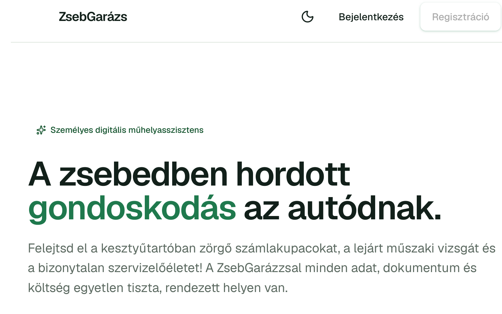
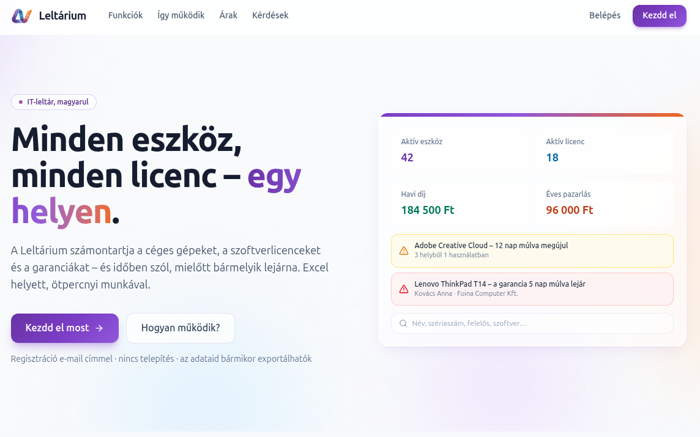

Egyedi webalkalmazás
Amit a dobozos szoftver nem tud. A cég saját folyamatára szabva, böngészőből, telepítés nélkül.
Egyedi webalkalmazás-fejlesztés
Webes alkalmazásokat építünk kis- és középvállalatoknak. Egy konkrét problémára, amit ma táblázat, papír vagy puszta megszokás tart életben.
Abban, ami egy jól megtervezett webes alkalmazással egyszerűbbé tehető, és valóban időt, munkát vagy pénzt takarít meg.
Amit a dobozos szoftver nem tud. A cég saját folyamatára szabva, böngészőből, telepítés nélkül.
A táblázatokban és papíron futó munkából működő rendszer lesz. Kevesebb kézi másolás, kevesebb elrontott adat.
A kész alkalmazás nem áll meg. Új funkciók, javítások és frissítések, amíg szükség van rájuk.
Négy lépés, meglepetések nélkül.
Végigvesszük, mi a probléma, és mennyit ér megoldani.
Fix hatókör, fix ár, világos határidő. Írásban.
Rendszeresen látja, hol tart. Menet közben lehet igazítani.
Átadás, betanítás, és utána is elérhetők maradunk.
Két saját fejlesztésű termék, amely ma is éles üzemben van.

Autós költségkövetés és digitális szervizkönyv
Költségek, szervizek és okmány-lejáratok egy helyen. Emlékeztetőt küld a műszaki vizsga előtt, eladáskor pedig PDF szervizkönyvet nyomtat.
zsebgarazs.hu
IT-eszköznyilvántartó és licenckezelő, magyarul
Céges gépek, szoftverlicencek és garanciák Excel helyett. QR-címkés leltározás, átadás-átvételi jegyzőkönyv és értesítő, mielőtt bármelyik lejárna.
leltarium.huÍrja meg pár mondatban, mi a probléma és mi lenne a jó végeredmény. Egy munkanapon belül válaszolunk.
info@appraforgo.hu